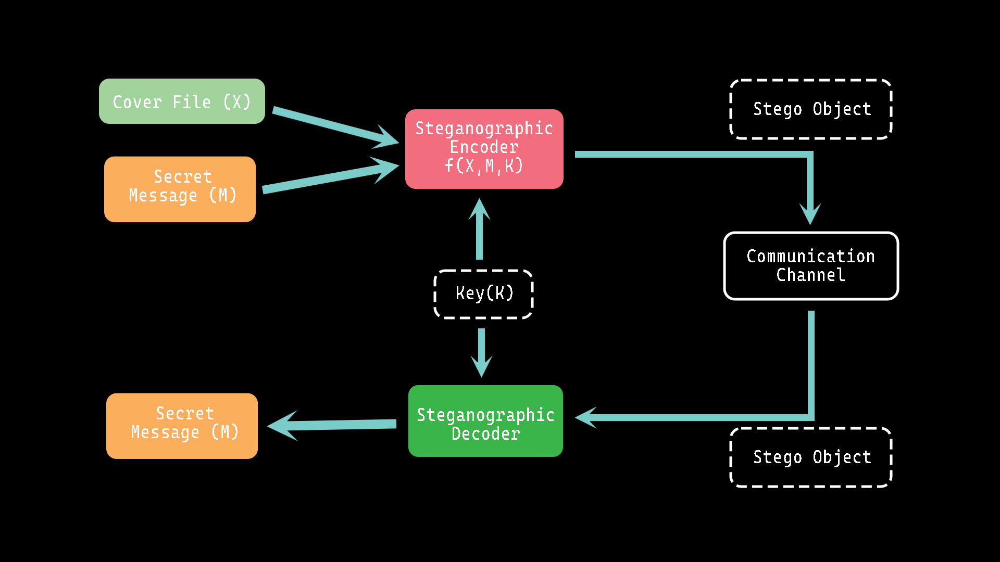

Text in Image Encryptor
The program that encrypts given text into any given image is a useful tool for secure communication. This program uses an image to store the encrypted message, making it difficult for anyone to intercept and read the message. The program can also decrypt the encrypted message from the image using bit manipulation of image data. It is written in C on VIM.

Application process walkthrough
The encryption and decryption processes are done using bit manipulation of image data. This technique involves modifying the least significant bits of each pixel in the image. Each pixel in an image is composed of three color values: red, green, and blue. By modifying the least significant bits of each color value, the program can encode the encrypted message into the image without changing the image's appearance significantly.
To encrypt a message, the program converts the message into binary form and splits it into small chunks. Each chunk is then encoded into the least significant bits of the image's pixels. The program modifies the bits in a specific pattern, ensuring that the changes are imperceptible to the human eye. Once the message is encoded, the image is saved with a different file name or in a different location.
To decrypt the message, the program reads the image and extracts the least significant bits of each pixel. The program then reassembles the bits to recover the binary message, which is then converted back into the original text format. Overall, the program that encrypts given text into any given image is an effective way to secure communication. The technique of using bit manipulation of image data makes the process of encryption and decryption seamless and imperceptible to the human eye. The program can be used for a variety of purposes, such as protecting sensitive information, transmitting confidential messages, or simply for fun.